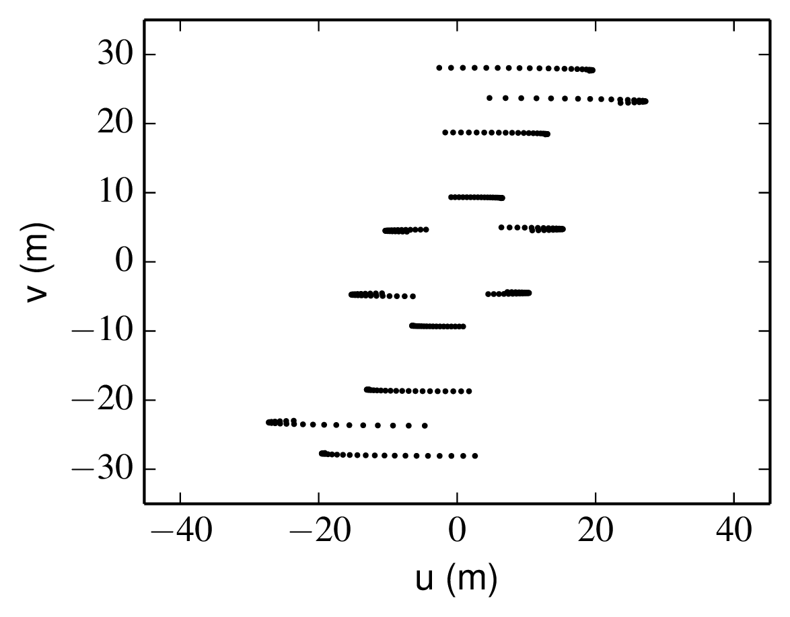

<a id="tth_chAp7"></a><h1>
Chapter 7 <br />Observation planning</h1>

<div class="p"><!----></div>
<a id="tth_fIg7.1">
</a>   
<table align="center" border="0"><tr><td>
</td></tr></table><!--hboxt-->
  
<div style="text-align:center">Figure 7.1: Baseline coverage tracks for observations of Mira (o Ceti) using the VLTI A0-B1-C2-D1 quadruplet of telescopes. The tracks shown are the coverage if Mira is observed at all elevations above 30<sup>&#176;</sup> . Python file: <a href="https://github.com/dbuscher/practical-optical-interferometry/blob/master//plots/miraUv.py">miraUv.py</a></div>
  <a id="fig:mira-uv">
</a>

<div class="p"><!----></div>

<div class="p"><!----></div>
